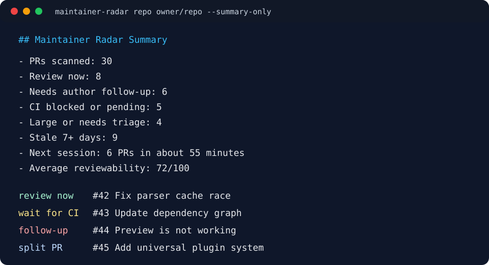

Local PR triage for maintainers
Maintainer Radar turns pull request metadata into a deterministic queue brief: what is ready for review, what is blocked by CI, and why each score changed.
PYTHONPATH=src python -m maintainer_radar from-json examples/sample-prs.json --now 2026-06-01T00:00:00Z
Local-first
No GitHub App, webhook, hosted database, or model key required.
Explainable
Every risk score includes the exact heuristic impact.
Maintainer-shaped
Output is built for review queues, handoffs, and CI artifacts.
Sample Queue Report
Generated from offline fixture data2PRs scanned
1Review now
1CI blocked
50Average score
| PR | Action | Score | Risk impact | Signals |
|---|---|---|---|---|
| #42 Fix parser cache race | review now | 100 | CI passed (-8 risk) | CI passed, review required, test plan present, tests changed |
| #43 Add universal plugin system | ask for CI fix | 0 | very large diff (+30 risk); CI failing (+30 risk) | changes requested, stale 22 days, no test plan found |
The CLI stays boring on purpose
It reads GitHub data through gh or offline JSON, then emits
Markdown, JSON, CSV, or standalone HTML. The scoring is transparent
enough to inspect and small enough to adjust for a repository's workflow.
